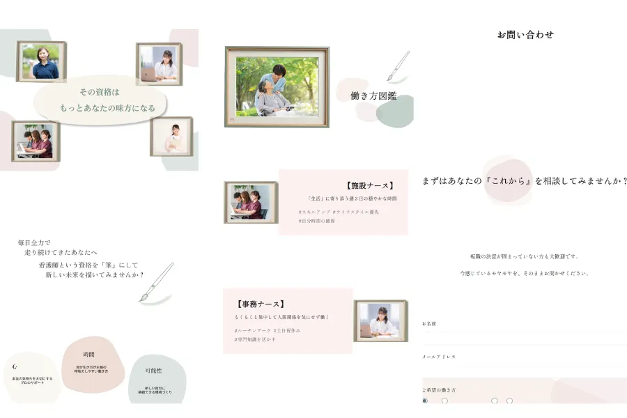
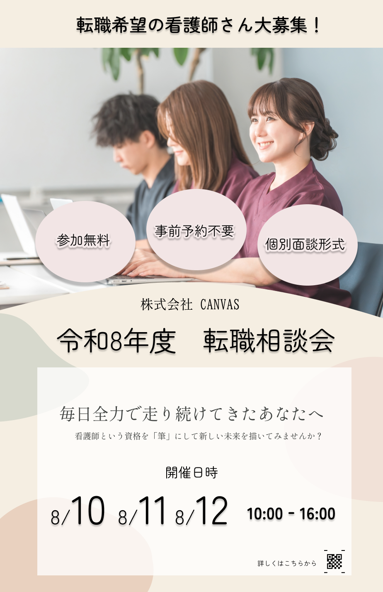
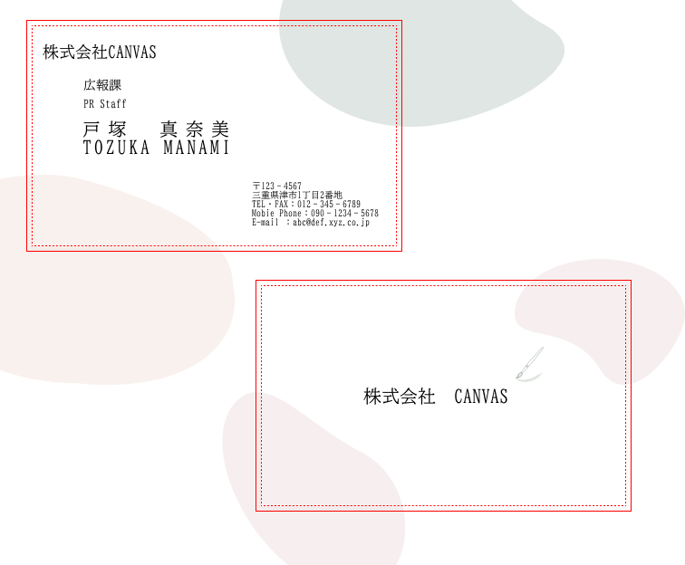

SKILL
Design / Figma & Photoshop
FigmaやPhotoshopを用い、サイト全体のレイアウトからサイトに載せる画像・写真の加工、紙媒体などへの広告デザインまで、コンセプトを視覚的に体現するUIデザインを行いました。
Development / WordPress & GitHub
VS Codeを用いたHTML/CSSコーディングから、独自のWordPressテーマ化まで対応可能です。GitHubによるこまめなバージョン管理を徹底し、将来のメンテナンス性を見据えた透明性の高いコードの構築を意識しました。
Optimization / AI & PageSpeed
PageSpeed Insightsを活用し、主要項目で高評価を獲得する軽量なサイトへと最適化しました。また、Gemini等のAIツールやGitHubのAI機能を駆使し、コードの修正や文章添削、エラー解決の高速化を実践しました。
POINT
情報の羅列ではないレイアウト
安心感を感じられる配色
「キャリアを認められている」という気持ちで読み進められる言葉選び
具体的な写真を使用したイメージのしやすさ
想いを自由に記載できる相談フォームのデザイン
相談ボタンへのスムーズな誘導動線
CONCEPT
「あなたの未来に、新しい彩りを。」
キャリアを味方にしながら新たな場所で生き生きと働いていく…
来訪者がそんな自分をイメージすることができるよう
転職活動を新しいキャンバスに絵を描いていくプロセスになぞらえ、
色彩豊かな絵具や筆を使ったデザインで表現しました。
このサイトなら、新たな扉を叩く不安に寄り添ってくれる
来訪者がそう感じられるような安心感のある場所を構築しました。
OTHER
広告ポスター

名刺
